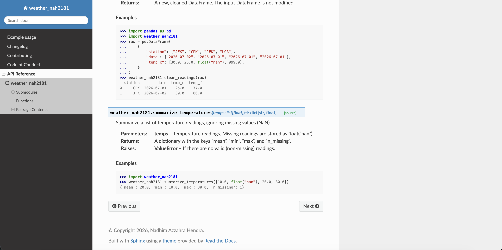

I made my first Python library this week. It started as homework for my Modern Data Structures class, and I found it useful for understanding how the libraries I use day to day at work are built. I want to share how I made it.
We’re going to turn a simple function into a library. In this case, the function converts Celsius to Fahrenheit. I kept it simple on purpose, so we can focus on how to make a library instead of the function itself. In the end, we’ll be able to import this function and use it, just like the code below:
import weather_nah2181
weather_nah2181.celsius_to_fahrenheit(21.5)
# 70.7I published it to TestPyPI, which is the practice version of PyPI, the place pip normally downloads Python packages from. So it is a real package on a practice shelf, and I am counting it anyway.
Before you start
You need uv, plus free accounts on GitHub and TestPyPI. Replace weather_nah2181 with your own package name in every command, because a name on TestPyPI can only belong to one project.
Step 1: Create the project
A template builds the folder structure for you. I used the one from my course, which asks a few questions, such as your name, your package name, and whether to include GitHub Actions:
uvx cookiecutter gh:QMSS-G5072-2026/qmss-pkgs-cookiecutterThen create the environment and save a first commit. uv sync creates .venv/ and uv.lock, a record of the exact version of every dependency:
cd weather_nah2181
uv sync
git init
git add .
git commit -m "Initial package structure"Keep committing as you finish each step below.
Step 2: Write the function
Put the function in src/weather_nah2181/weather_nah2181.py, which the template leaves empty:
def celsius_to_fahrenheit(celsius: float) -> float:
"""
Convert a temperature from degrees Celsius to degrees Fahrenheit.
Examples:
>>> import weather_nah2181
>>> weather_nah2181.celsius_to_fahrenheit(100)
212.0
"""
return celsius * 9 / 5 + 32My real version also rejects invalid inputs, but this one is enough to follow along. Next, import the function in src/weather_nah2181/__init__.py, so people can call it directly from the package:
from importlib.metadata import version
from weather_nah2181.weather_nah2181 import celsius_to_fahrenheit
__version__ = version("weather_nah2181")
__all__ = ["celsius_to_fahrenheit"]To try it, create a file called try_it.py in the main project folder:
import weather_nah2181
print(weather_nah2181.celsius_to_fahrenheit(21.5))Then run it with uv run, which uses the project’s environment, so there is nothing to activate first. Delete the file afterward so it stays out of your commits:
uv run python try_it.py
# 70.7Step 3: Add dependencies and check the types
The Celsius function doesn’t need anything else, but another function in my package uses pandas. Skip pandas and pandas-stubs if your code only uses plain Python:
# needed by anyone who uses the package
uv add pandas
# needed only while developing it
uv add --dev mypy pandas-stubsmypy then checks that the code matches the float labels in the function’s first line:
uv run mypy src/weather_nah2181Step 4: Build the documentation
The first command checks that the >>> examples in your docstring are correct. The second turns them into a web page in docs/_build/html/:
uv run pytest --doctest-modules src
uv run make -C docs html
Step 5: Write the tests
Add your tests to tests/test_weather_nah2181.py. Known answers work well for a conversion function:
import pytest
from weather_nah2181 import celsius_to_fahrenheit
@pytest.mark.parametrize(
"celsius, expected",
[(0, 32.0), (100, 212.0), (-40, -40.0), (21.5, 70.7)],
)
def test_celsius_to_fahrenheit(celsius, expected):
assert celsius_to_fahrenheit(celsius) == pytest.approx(expected)Then run them with a coverage report, which lists any lines the tests never reached. My full package has 16 tests covering 96% of the code:
uv run pytest --cov=weather_nah2181 --cov-report=term-missingStep 6: Push to GitHub
Create an empty repository on GitHub, then push the project to it:
git branch -M main
git remote add origin https://github.com/<your-username>/weather_nah2181.git
git push -u origin mainIf you chose ci for GitHub Actions in Step 1, every push to main now reruns the tests and rebuilds the documentation on a clean machine. Mine took 23 seconds.
Step 7: Set the version and build
The template starts at 0.1.0. Set the version, commit it, and build the package:
uv version --bump patch # 0.1.0 => 0.1.1
git add pyproject.toml uv.lock
git commit -m "Bump version to 0.1.1"
uv build
ls dist/
# weather_nah2181-0.1.1-py3-none-any.whl
# weather_nah2181-0.1.1.tar.gzCheck that ls dist/ shows only the version you mean to publish. Package indexes treat a version number as permanent, so once 0.1.1 is uploaded, that number can’t be reused, even if you delete the release.
I almost got this wrong. My homework notebook had a cell with uv version --bump patch, which adds one to the version every time it runs. When I reran the notebook, my package moved to 0.1.2 with no change to the code, and uv build put the new files next to the old ones. uv publish uploads everything in that folder, so 0.1.2 would have gone up too. It came up while my homework was being checked before publishing, and it happened a second time before I finally replaced the cell. Be careful with notebook cells that change something outside the notebook.
Step 8: Publish to TestPyPI
Create an API token in your TestPyPI account settings. uv can read it from an environment variable, which keeps it out of your code and your commits:
export UV_PUBLISH_TOKEN="<your-token>"
uv publish --publish-url https://test.pypi.org/legacy/Your package now has its own page on TestPyPI, like mine.
Step 9: Install it the way a stranger would
Your project environment uses your local code, so test the published copy from a new folder outside the project:
mkdir try-my-package
cd try-my-package
uv init --bare --no-workspaceBefore installing, add this to the new pyproject.toml:
[[tool.uv.index]]
name = "testpypi"
url = "https://test.pypi.org/simple/"
explicit = true
[tool.uv.sources]
weather_nah2181 = { index = "testpypi" }This tells uv to get my package from TestPyPI and everything else from regular PyPI. TestPyPI is an open sandbox, and its package names are separate from the ones on PyPI, so a package called pandas there doesn’t have to be the real one.
Now install the package:
uv add weather_nah2181Then create a file called try_it.py in the same folder:
import weather_nah2181
print(weather_nah2181.__version__)
print(weather_nah2181.celsius_to_fahrenheit(21.5))Run the file with uv run, so it uses this project’s environment:
uv run python try_it.py
# 0.1.1
# 70.7The answer is 70.7, the same as at the top of this post, but this time it came from the copy on TestPyPI.
Closing
The function is one line of math, and it was the shortest part of this project. Most of the work was everything around it: the type checks, the documentation, the tests, and the steps that let someone else install it. Through this project I now have a better idea of what sits behind the libraries I install at work with one command.